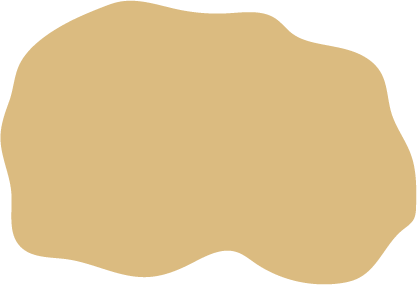

Передскіфський період. Розселення культурно-історичних спільнот (Х ‒ поч. VІІ ст. до н. е.)
Ареали поширення культур

Кімерійська
Чорноліська
Висоцька
Пам’ятки культур
Кургани
Лісостепові кургани
Скарби
Городища і поселення
Грунтові могильники